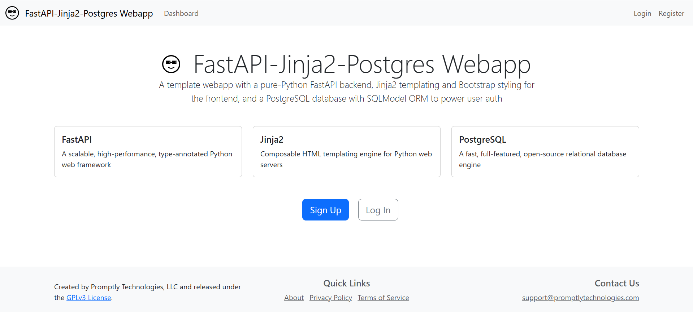

FastAPI, Jinja2, PostgreSQL Webapp Template

Quickstart
This quickstart guide provides a high-level overview. See the full documentation for comprehensive information on features, installation, architecture, conventions, code style, and customization, deployment to cloud platforms, and contributing.
Features
This template combines three of the most lightweight and performant open-source web development frameworks into a customizable webapp template with:
- Pure Python backend
- Minimal-Javascript frontend
- Powerful, easy-to-manage database
The template also includes full-featured secure auth with:
- Token-based authentication
- Password recovery flow
- Role-based access control system
Design Philosophy
The design philosophy of the template is to prefer low-level, best-in-class open-source frameworks that offer flexibility, scalability, and performance without vendor-lock-in. You’ll find the template amazingly easy not only to understand and customize, but also to deploy to any major cloud hosting platform.
Tech Stack
Core frameworks:
- FastAPI: scalable, high-performance, type-annotated Python web backend framework
- PostgreSQL: the world’s most advanced open-source database engine
- Jinja2: frontend HTML templating engine
- SQLModel: easy-to-use Python ORM
Additional technologies:
- Poetry: Python dependency manager
- Pytest: testing framework
- Docker: development containerization
- Github Actions: CI/CD pipeline
- Quarto: simple documentation website renderer
- MyPy: static type checker for Python
- Bootstrap: HTML/CSS styler
- Resend: zero- or low-cost email service used for password recovery
Installation
For comprehensive installation instructions, see the installation page.
Python and Docker
PostgreSQL headers
For Ubuntu/Debian:
sudo apt update && sudo apt install -y python3-dev libpq-devFor macOS:
brew install postgresqlFor Windows:
- No installation required
Python dependencies
- Install Poetry
pipx install poetry- Install project dependencies
poetry install- Activate shell
poetry shell(Note: You will need to activate the shell every time you open a new terminal session. Alternatively, you can use the poetry run prefix before other commands to run them without activating the shell.)
Set environment variables
Copy .env.example to .env with cp .env.example .env.
Generate a 256 bit secret key with openssl rand -base64 32 and paste it into the .env file.
Set your desired database name, username, and password in the .env file.
To use password recovery, register a Resend account, verify a domain, get an API key, and paste the API key into the .env file.
Start development database
To start the development database, run the following command in your terminal from the root directory:
docker compose up -dRun the development server
Make sure the development database is running and tables and default permissions/roles are created first.
uvicorn main:app --host 0.0.0.0 --port 8000 --reloadNavigate to http://localhost:8000/
Lint types with mypy
mypy .Developing with LLMs
In line with the llms.txt standard, we have provided a Markdown-formatted prompt—designed to help LLM agents understand how to work with this template—as a text file. One use case for this file is to rename it to .cursorrules and place it in your project directory is using the Cursor IDE (see the Cursor docs on this for more information).
We have also exposed the full Markdown-formatted project documentation as a single text file for easy downloading and embedding.
Contributing
Your contributions are welcome! See the issues page for ideas. Fork the repository, create a new branch, make your changes, and submit a pull request.
License
This project is created and maintained by Promptly Technologies, LLC and licensed under the MIT License. See the LICENSE file for more details.